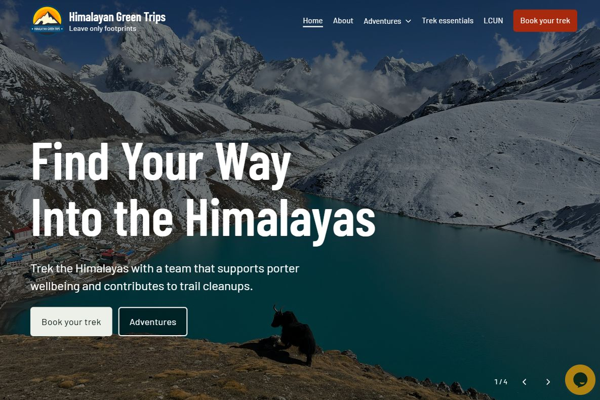

One system, three pages
The pages have different jobs. Shared fonts and colour roles help them feel like parts of the same website.
Fraunces gives the headings their character. Hanken Grotesk carries the longer passages.
Fraunces
Hanken Grotesk
Desktop spacing from the HGT case study. Each page has its own measurements.
Home
Calm design
for busy minds.
Hi, I'm Christin, a digital experience designer with a background in cognitive neuropsychology.
About
Why I love my work and what keeps me curious
My current work revolves around cognitive accessibility and calmer decision support.
HGT case study
Himalayan Green Trips.
Helping travellers understand the trek ahead.
I wanted to know more than the name of our next stop.
Short excerpts with sizes adapted for this comparison. The reference panel changes; the examples stay in place.
Making room to read
Texture and movement give my portfolio character. Reading Focus offers a quieter view for longer stories.
Try Reading Focus
Try it on this page.
Default
A familiar page gives someone room to follow a thought. The words stay in the same order, with enough space to pause and find the next sentence.
17px text · 1.65 line height
Paper texture remains visible
Reading Focus on
A familiar page gives someone room to follow a thought. The words stay in the same order, with enough space to pause and find the next sentence.
19.04px text · 1.9 line height
Paper texture removed
Fixed examples at a 16px browser base. The control changes the surrounding page. Browser font settings and zoom affect the live view; fixed-pixel text does not scale with Reading Focus.
What changes and what stays
The artwork stays still
Reading Focus pauses the homepage artwork and hides its drawing controls. The separate Pause motion control and your device’s reduced-motion preference also work when Reading Focus is off.
Image colour is a preference
The effect can be subtle in a photograph that already has little colour.

No colour filterThe site palette stays the same.
Muted images are optional. W3C supports personalisation; WCAG requires meaning to be clear without colour alone. Whether this setting helps readers still needs testing, and it can make colour-coded details harder to distinguish.
Open the original image at full sizeThe words and links stay available. Larger text may make the page longer. Switch Focus off whenever the default reading view suits you.
The website remembers your preference
- 01Choose a view
- 02Your browser saves it
- 03Return to the same view
With no saved preference, it starts Off. If storage is blocked, the control still works on this page.
What I checked
Source review, simulated controls and contrast calculations completed on 20 October 2026. Browser checks remain pending.
Control logic
- Page, labels and pressed states update together.
- Saved choices restore; blocked storage still allows toggling.
Simulated page elements.
Styles and motion
- Type & visuals
- Styles reviewed across Home, About and this page.
- Motion
- Pause guards, replays and anchor scrolling reviewed.
- Control visibility
- Footer tuck and focus-restoration rules reviewed.
Control contrast
Both exceed 4.5:1 for normal text (solid colours).
Next: browser checks
- Keyboard controls
- 200% and 400% zoom
- 320px layout
- Screen readers
Reader feedback will follow, including whether image muting should be a separate preference.
Implementation notes
The native button exposes aria-pressed. The saved view is applied before the body loads; storage errors are caught.
CSS brings the floating control back on keyboard focus near the footer.
A connection to predictability
For me, predictability includes a visible choice that someone can reverse.
Colour tokens
I named the colours by their role so I could reuse the same decisions as the website grows. Keeping page ground and warm linen separate also helps the documentation match the live pages.
Core colours in the live website
Soft bands and decorative colour
The dark component demos below retain violet #372549 and rose #CFA9C4 as a reusable dark-surface option. The current homepage testimonial section has a light background. Decorative colours in the homepage artwork sit outside these text and interface tokens.
Palette as a system
I built this demo to explore how the colours work together in an interface, with text contrast visible as I try another colour family. The slider changes only the example below; the roles of the colours stay the same.
Plum & Linen, as used across this site. The interactive version needs JavaScript.
The linen ground leans only a quarter of the way toward the chosen hue, so it keeps reading as paper. Warm hues carry a little more colour than cool ones. The stretch of cold greens between sage and sky is left out on purpose.
Colour contrast checks
I checked these pairs so small labels and reading text have enough contrast against their backgrounds. Calculated on 20 October 2026 with the WCAG relative-luminance formula, each listed solid pair exceeds 4.5:1 for normal text. Displayed ratios are rounded to two decimal places.
| Foreground | Background | Ratio | Normal text |
|---|---|---|---|
Body text#1A1423 | Page ground#FFFDFA | 17.70:1 | Pass |
Body text#1A1423 | Soft surface#E4DDE3 | 13.48:1 | Pass |
Mauve link#6E4658 | Page ground#FFFDFA | 7.72:1 | Pass |
Mauve label#6E4658 | Soft surface#E4DDE3 | 5.88:1 | Pass |
Linen label#FAF3EF | Mauve button#6E4658 | 7.14:1 | Pass |
Linen text#FAF3EF | Navigation / footer#523544 | 9.80:1 | Pass |
Rose accent#CFA9C4 | Deep ink demo#1A1423 | 8.67:1 | Pass |
Reading Focus: off#1A1423 | Warm control background#F0E4DC | 14.41:1 | Pass |
Reading Focus: on#FFFDFA | Mauve control background#6E4658 | 7.72:1 | Pass |
These calculations cover the listed solid pairs. Text over gradients, transparency, grain or imagery needs a separate check of the rendered combination. Colour contrast is one part of accessibility; this table is not a whole-site conformance audit.
Method and thresholds: W3C, Understanding Contrast (Minimum).
Typography
I chose Fraunces for the warmth in the headings, with Hanken Grotesk for longer passages and controls. A shared type scale keeps the hierarchy familiar from page to page. Playfair remains in legacy styles.
Reading the specs
- Weight: 400 is regular, 600 semibold and 700 bold.
- rem: size relative to the browser’s base font; usually 16px for 1rem.
- Line height (lh): line spacing as a multiple of the text size.
- Letter spacing (ls): the gap between letters; negative values bring letters closer.
- clamp: a size that changes with the viewport, within a minimum and maximum.
Colour through the homepage
Repeating a few familiar surfaces helps me mark a change of section without giving every part of the homepage a new visual style. This map shows how the gradient, light reading areas and deep-mauve footer work together as someone moves down the page.
Filled panels group content. Borders remain useful around screenshots, controls and cards where an edge helps. The pattern follows the content rather than requiring every section to alternate colours.
A darker setting
Linen text and a rose highlight keep the hierarchy familiar on a dark background. Violet gives the card a separate surface.
“I wanted to know more than the name of our next stop.”From my Himalayan Green Trips case study
Motion tokens
I keep a small set of timings so similar interactions respond at a familiar pace. The demos use four durations and two curves. The homepage artwork has its own Pause motion control; Reading Focus and reduced motion also stop that artwork. Some older pages still use different timings.
How to read these specs
- ms is milliseconds, thousandths of a second. 200ms is a fifth of a second: quick enough to feel immediate, long enough to be seen.
- Easing is the speed curve of a move, how it starts and how it lands. Each curve here has a plain name and a drawn shape.
- Reduced motion is a setting in the reader's operating system that asks sites to move less. Every pattern below has a reduced-motion version.
- Replay runs a demo one more time. The motion demos on this page run only when Replay is selected.
- View CSS opens the exact line of code behind a value, for anyone building with it. The full set is in the copy-paste block further down.
Duration · four steps
View CSS
--dur-quick: 150ms;View CSS
--dur-base: 200ms;View CSS
--dur-slow: 300ms;View CSS
--dur-reveal: 800ms;Easing · two curves
View CSS
--ease-standard: ease;View CSS
--ease-settle: cubic-bezier(0.22, 1, 0.36, 1);The dotted line is a constant speed, for reference. Both demos run at the reveal duration so the difference in shape is easy to see; on the site each curve runs at its own duration.
Distance
| Distance | Value | Use |
|---|---|---|
| Rise | 16px | Travel in this page’s reveal demo. Distances elsewhere remain page-specific. |
| Nudge | 4px | Travel in this page’s link demo. Other page patterns need separate review. |
View CSS
--rise: 16px; --nudge: 4px;Patterns
Hover: colour, background and the underline change over 200ms; the arrow moves 4px. These examples keep the button’s size unchanged.
Reveal: this demo fades in and rises 16px over 800ms when Replay is selected. The live homepage uses its own reveal timings.
| Pattern | What moves | Duration | Easing |
|---|---|---|---|
| Nav hover | Link colour lightens; the Work with me control fills | 200ms · base | standard |
| Button hover | Background darkens to the deeper mauve | 200ms · base | standard |
| Case-study link | Underline appears; the arrow nudges 4px | 200ms · base | standard |
| Reading-focus toggle | Colour swaps; the pill tucks away while the footer is in view | 300ms · slow | standard |
| Mobile menu icon | Three bars fold into a cross | 300ms · slow | standard |
| Reveal demo on this page | Opacity 0→1 and a 16px rise | 800ms · reveal | standard |
| Homepage artwork | Breathing rings and an orbit | 17–27s / 140s | artwork-specific; separate pause control |
| Focus | The outline appears | 0ms | none, instant |
| Page anchor jump | The browser scrolls to the section | browser default | native; off under reduced motion |
Focus is never animated: a keyboard user shouldn't wait to see where they are. On this page, anchor jumps use the browser’s smooth scrolling and become an instant jump under reduced motion.
When motion stops
Your current motion preference: Full motion
When reduced motion is enabled:
- Fades remain. Colour and opacity can still change because nothing moves across the screen.
- Movement is removed. Content appears in place instead of rising, sliding, nudging or zooming.
- Page navigation is immediate. Smooth scrolling becomes an instant jump.
- Homepage artwork stays still. CSS animation and interactive drawing are disabled by the homepage’s reduced-motion handling.
- Focus indicators remain immediate. They are never animated, so keyboard users can always see where they are.
This page’s prefers-reduced-motion rules make the replay demos fade in place. The homepage separately handles its artwork. Coverage elsewhere needs checking pattern by pattern; the presence of a media query alone does not establish that every movement has been addressed.
Why so few steps? A small set of timings gives ordinary interactions a consistent pace. The ambient homepage artwork is a separate design choice, with a separate way to pause. Keeping that distinction visible helps me question when movement supports the experience and when a still page would serve the reader better.
Implementation notes
The motion tokens are used by this page’s demos. Consolidating the rest of the site remains maintenance work.
- Homepage reveals still include 650ms and 750ms timings on the settle curve. The 800ms token is the documented demo value, not a claim that every page has migrated.
- Ambient artwork uses longer loops outside the interaction scale. Pause, Reading Focus and reduced motion need to remain part of that implementation.
- Shared styles are still repeated across page files. Moving common rules into one stylesheet would reduce the chance of documentation drifting from the website.
Tokens to reuse
Keeping these values together gives me a starting point for a new page and a reference when something looks inconsistent. Core colours match the homepage; the motion values power this page’s demos. Older page styles still need to be reviewed before adopting this block.
Colours
:root {
--bg: #FFFDFA; /* main page ground */
--linen: #FAF3EF; /* warm panels */
--on-bar: #FAF3EF; /* light text */
--surface: #E4DDE3;
--dark: #1A1423;
--headline: #1A1423;
--body: #1A1423;
--accent: #6E4658;
--accent-h: #523544;
--bar: #523544;
--faint: #CBB4C3;
/* soft bands */
--tint-1: #F5EEF3;
--tint-2: #E6DAE3;
--tint-3: #C0A5B8;
--glow: #F7DFD1;
/* dark demo variants */
--ink-card: #372549;
--rose: #CFA9C4;
}Typography
:root {
--display: 'Fraunces', Georgia, serif;
--body-fnt: 'Hanken Grotesk', system-ui, sans-serif;
--serif: 'Playfair Display', Georgia, serif; /* legacy */
}Motion
:root {
--dur-quick: 150ms;
--dur-base: 200ms;
--dur-slow: 300ms;
--dur-reveal: 800ms;
--ease-standard: ease;
--ease-settle: cubic-bezier(0.22, 1, 0.36, 1);
--rise: 16px;
--nudge: 4px;
}Keeping the system useful
The documentation needs care whenever the website changes. Keeping the examples current gives me a reliable place to return to when I add a page or revisit a design decision.
- When a live pattern changes, update the matching example and record which pages have adopted the change.
- Recalculate contrast for the actual foreground and background. Check rendered gradients, opacity and image overlays separately.
- Review Reading Focus and reduced motion alongside the default presentation, including browser zoom and keyboard use.
- Bring repeated styles into shared files gradually, checking each page as the change reaches the live site.
Documentation history
v2.3 · 21 October 2026: replaced placeholder component examples with real project content and controls for larger text, a narrower layout and a longer title. Checked the combined control states and Reset in isolated JavaScript tests; browser checks remain open.
v2.2 · 20 October 2026: added the project context and Reading Focus example; reconciled colours, type roles and homepage descriptions; recalculated the listed contrast pairs and recorded the limits of the checks.
v2.1: motion tokens and replay demos. v2: Plum & Linen palette. v1: the earlier Ink & Ochre system.